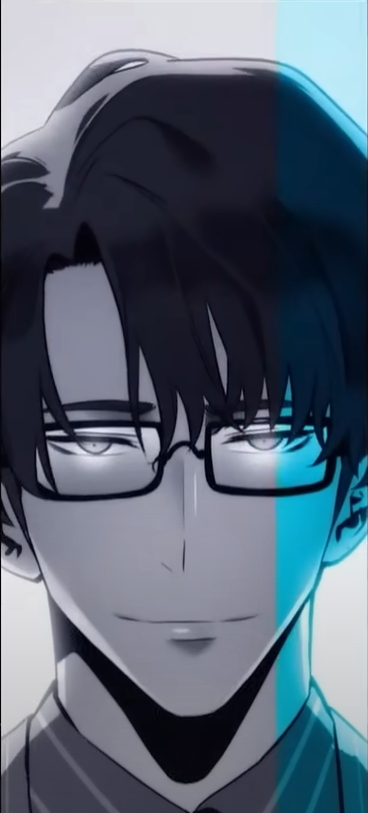
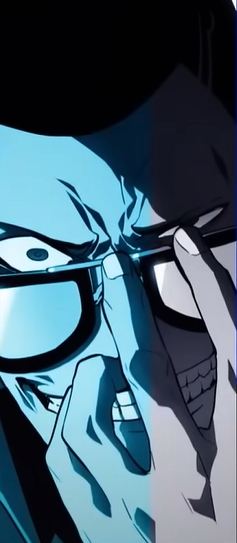
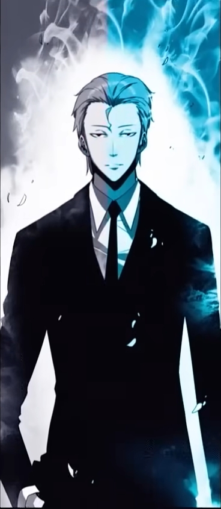

Имя: Ча Хаэ Ин, "Танцовщица"
Происхождение: Solo Leveling
Уровень сил: 8
Пол: Женский
Классификация: Охотник S-ранга, заместитель главы гильдии "Охотники"
Возраст: 22 года
Умения, силы и способности: Сверхчеловеческие физические характеристики, сверхчеловеческие
чувства, экстрасенсорные
восприятия, регенерация (тип 2), фехтование, ловкость, магия, манипуляции энергией,
эмоциональные манипуляции,
сопротивляемость (ядам, болезням, магии, отрицательным эффектам)



Имя: Чо Джон Ин, "Последнее оружие", "Сильнейшее оружие"
Происхождение: Solo Leveling
Уровень сил: 8
Пол: Мужской
Классификация: Охотник S-ранга, глава гильдии "Охотники"
Возраст: Неизвестно
Имя: Хван Донг Су
Происхождение: Solo Leveling
Уровень сил: 8
Пол: Мужской
Классификация: Охотник S-ранга, член гильдии "Падальщики" (США)
Возраст: 27
Имя: Ву Джин Чоль
Происхождение: Solo Leveling
Уровень сил: 8
Пол: Мужской
Классификация: Охотник А-ранга, член Ассоциации Охотников Кореи
Возраст: 30 лет